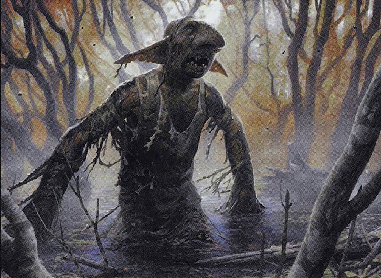

Não subestime as qualidades aerodinâmicas de um goblin comum.
Passo 1: Encontre seu primo.
Passo 2: Coloque seu primo no canhão.
Passo 3: Encontre outro primo.

Moggues nunca são voluntários duas vezes para qualquer coisa.
Os canhoneiros goblin são conhecidos não por sua pontaria mas por sua habilidade de se esconder.
Hey, acorde!
"Senha secreta dos Moggs"
"Eu peguei! Eu peguei! Eu..."
Três moggues, um tesouro. Que pena.
Quando você precisa passar aquele tipo especial de mensagem.
Quanto mais vítimas ele mata, maiores as probabilidades dele pegar a certa.

Estúpido demais para sobreviver, idiota demais para morrer.